一个多 Agent、多阶段的自主科研系统。Director 决策方向，Agent 调度执行，Reviewer 独立审查——三 Agent 对抗，执行与审稿反复穿插迭代，从 Idea 到投稿全链路闭环；底层由自建 SaaS 平台在 AWS 集群上弹性调度。
日常的执行、审查、写作交给三个职责互斥的 Agent；人不做体力活，只做最关键的决策——定方向、批资源、控节奏。这套分工既保证产出，又保证可控。
方向决策、资源/GPU 管理、审批实验。不能自己跑实验——把自己当成"带一支 AI 团队的 PI"，按团队速度排程。
调度 + 轻量规划。自己不做 SSH / 写代码 / 读日志——重活派给一次性 Worker，实验 registry 为唯一事实来源。
只读权限，与执行并行穿插。独立复核每个结论，返回 info / warning / critical，critical 直接暂停项目。
系统不是失控黑箱：立项与方向由人提出与拍板；动用 实验、GPU、密钥等关键资源必须人工审批；预算与节奏由人掌控，可随时介入、暂停或要求 pivot——全程在看板/群里可见、可干预。
执行体和审查体是两个不同进程、不同工具权限、不同 prompt。执行 Agent 无法伪造审查 Reviewer 看到的东西——Reviewer 独立读取原始 nvidia-smi、训练日志与 W&B 指标。这是系统可信度的根基。
Idea 定方向、过 MVP 闸之后，执行与审稿在一个闭环里反复穿插，直到论文被打磨到可投水位，再进入投稿。
Reviewer 只读复核与执行同时进行，不等实验全部跑完才介入——问题越早发现，越省算力、越快收敛。
Reviewer 返回 critical 直接暂停项目、退回执行端重做；Review 阶段还能开 fresh round 再次把意见打回。
Paper Agent 对抗 Reviewer 自我精修最多 5 轮；整条链路平均约 17 轮审稿，论文随每一轮收敛到可投水位。
普通 Agent 只能"跑完才知道好坏"。Dream 让系统在开跑之前，就异步推演一条研究路线会走到哪——预见结局、预见审稿意见，从而带着前瞻去规划，而不是被动地等结果出来再反应。
带 simple / full 两档 review、跨次趋势追踪、SHA-256 智能跳过（无新信息不重算）；数据落 per-project YAML。
AI 不天然知道某个子领域的人怎么做 baseline、怎么画图、怎么讲故事。蒸馏体系把一个领域的文献与过往经验，提炼成系统可复用、可累积的领域知识。
事件 → 观察 → 模式 → 技能一个研究项目要跑数天。让一群 Agent 在数天里不卡死、不因上下文写满而"失忆"，是工程上最难的部分。两个机制兜住它。
Director 跑在后台、输出对用户不可见；一旦它发呆，几十张 GPU 就在空转烧钱。守护进程检测到静默后：
鼓励 → 提醒 → 审计 → 告警 分级，生成一条带上下文的催促ACK / WAIT / BLOCKED 明确回应单个上下文窗口装不下数天的工作，且会随写满逐渐"退化变笨"。Ralph Loop 做上下文轮转：
内部审稿采用"无情严格"标准（对标 NeurIPS 真实分制），并贯穿整个执行过程。即便如此严苛，仍有 15 个项目达到了 accept 水平。
立项 120–150 经 MVP 最小验证早筛，约 86 个进入完整研究，最终 59 篇投稿——MVP 把算力省在有希望的项目上。
蒸馏体系的"外环飞轮"已经落地：把第二轮 40 个 EMNLP + CoRL 项目跑出的多 Agent 轨迹，经 ETL、打分、智能拆分、再过滤，提炼成可迁移"研究推理能力"的训练数据——用来微调我们自己的模型。
| 阶段 | 样本数 | 说明 |
|---|---|---|
| 原始 session 文件 | ~64,000 | S3 上 40 个项目 |
| ETL 输出 | 48,290 | 去重、过滤后 |
| 打分后 (keep+boost) | 19,544 | 丢弃 28,746（59.5%） |
| 智能拆分后 | 59,299 | 每条 ≤ 16K tokens |
| 重新打分过滤 | 43,485 | 过滤 17,245 垃圾 chunk |
| Tier | 样本数 | 占比 | 训练权重 |
|---|---|---|---|
| boost | 1,042 | 1.8% | ×2–3（上采样） |
| keep | 41,012 | 69.2% | ×1 |
| drop | 17,245 | 29.1% | 丢弃 |
最高质量的 boost 段位上采样 2–3 倍，让"内行操作"在训练里占更高权重；垃圾 chunk 直接丢弃。
自动产出论文。从 Idea 到投稿全自动闭环，Paper Agent 跑完整 5 步流水线。面向"会议投稿"的旗舰形态。
方向性探索 / 实验，不必跑完整论文。产物多样化——技术报告、消融结论、可行性判断。团队内部用它跑实验已经非常实用。
在公认 Benchmark 上自主调优。瘦身成紧凑单 Agent 优化循环，直连 SSH 执行权，配合严谨核验闸——证明 BE 核心模块的调优能力。
这个 speedrun 跑了约两年、被社区刷新 83 次纪录，把训练时间从 45 分钟一路压到 79.2 秒——已几乎卷到头。我们的 agent 在 8×H100 上自主跑到 79.188s，落在 SOTA 前沿；仅在统计显著的 val_loss 门限上以微弱差距未达标。证明 BE 核心模块的调优能力已摸到全球顶尖水平的边界。
SaaS 平台已部署在 AWS，控制面 + 数据面就绪；邀请首批研究团队上手 Research / Apex Research 模式。
补齐"命中门限即自动独立核验"的最后两根接线，让 Benchmark 模式全自动上榜，持续证明调优硬实力。
租户配额与 BE 上限均为软旋钮，随内测需求线性放大；预留 N 路并行探索接口。
三 Agent 对抗内核 · 执行与审稿穿插迭代 · 三种产品形态 · 已部署的多租户 AWS 平台
内部审稿分为系统模拟审稿分，非会议真实录用结果；Benchmark 成绩以 canonical 独立核验为准。
AgenticFigure 是一套面向科研可视化的多智能体矢量图生成系统。它读懂论文方法，自动产出原生 SVG 图——每个文字、模块框、箭头都可二次编辑；7 个专业化 Agent 协作、三个独立 Critic 对抗盲审，保证图既好看又忠实于原文。
PaperBanana（北京大学 & Google Cloud AI Research, 2026）是该领域的代表性工作。三个维度看架构级差异。
最终产物是 PNG。想改个箭头方向、换个标签？只能整图重新生成。作者提出 "OCR + SAM3 分割 → 重组" 的后处理，但只是补丁。
文本是 <text>、框是 <rect>、箭头是 <path>。直接拖进 Inkscape / Illustrator 改任意元素，要求 ≥85% 原生矢量 并附 ElementGraph 证明。
五个 Agent 固定顺序执行，Critic 与生成器共享上下文——本质是"自己检查自己的作业"。Faithfulness 仅 45.8%。
7 个专业化智能体由 Harness 按需编排。三个独立 Critic（语义/视觉/布局）并行且互相隔离，如同真正盲审；未过只回流 issue 列表，防投机修复。
训练与评测集均来自 CS 论文，没有领域扩展机制，面对基因通路图、晶体结构图等无法适配。
Skill 插件化架构，自动识别论文领域并加载对应视觉范式——新增一个领域只需写一个 Skill，无需重训。
以下六组对比均基于同一篇论文的方法描述，分别由 PaperBanana 与 AgenticFigure 生成。点击任意图片可放大查看。
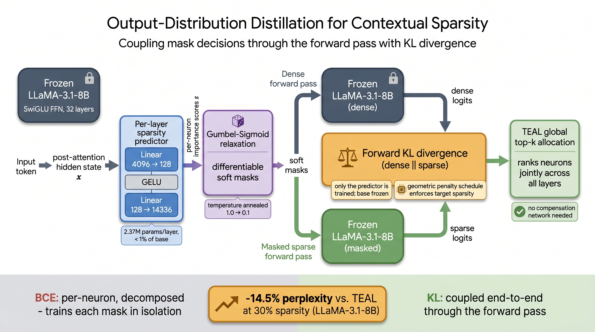
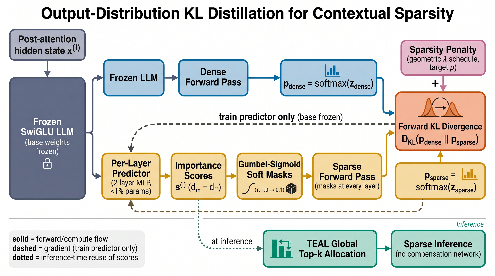
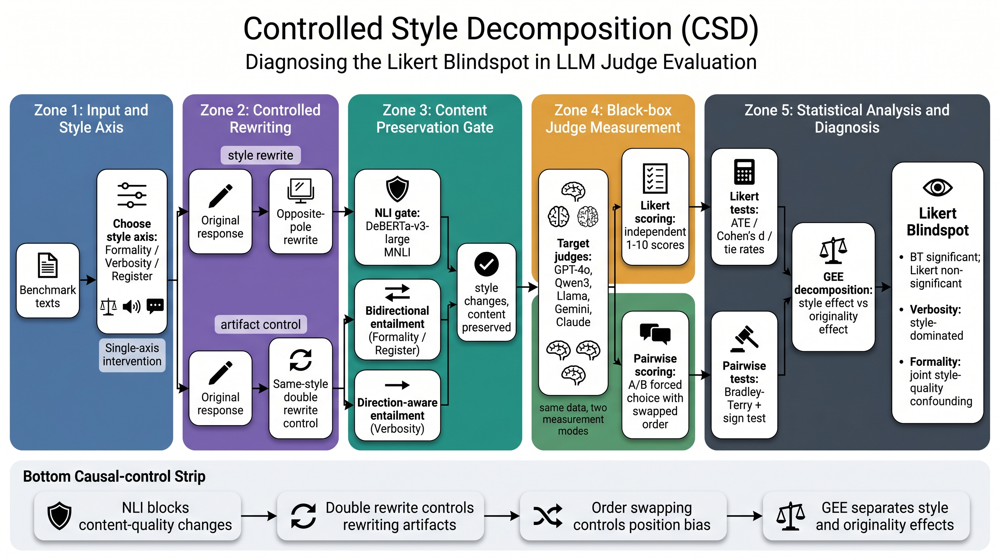
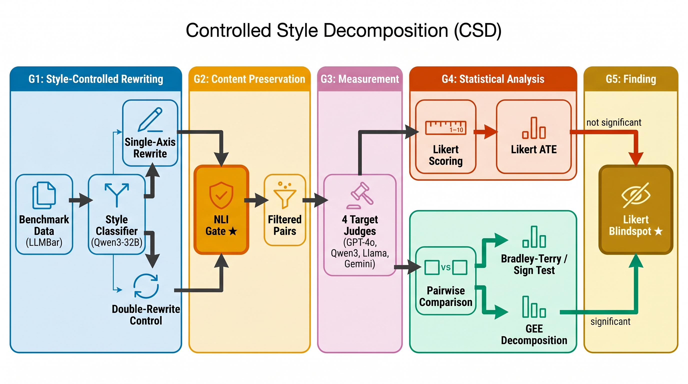
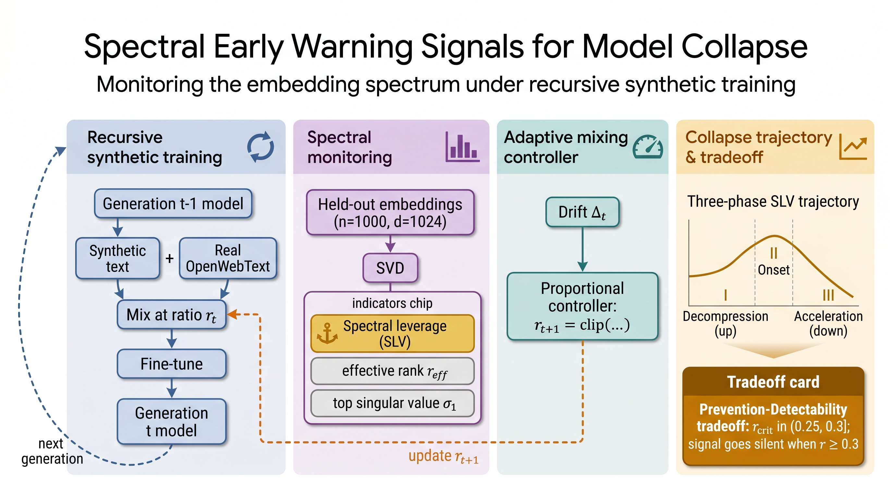
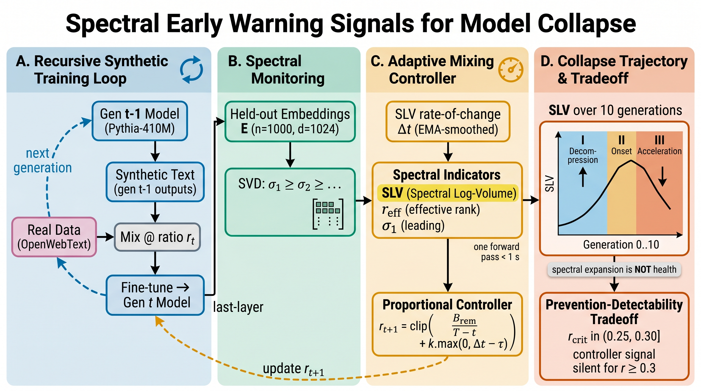
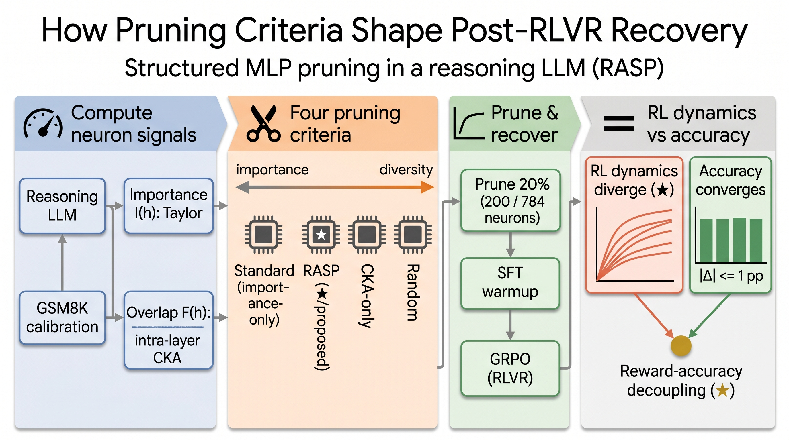
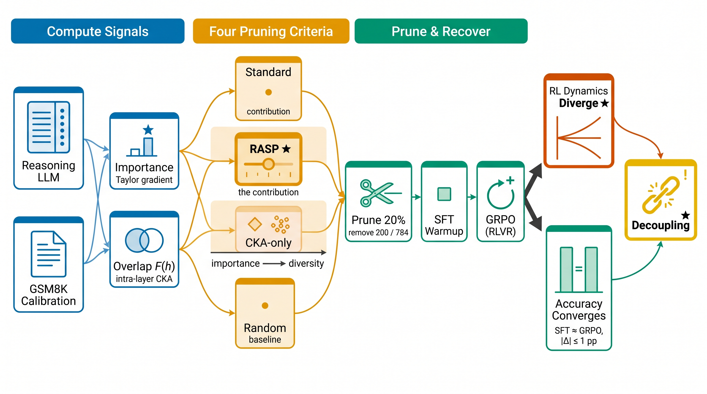
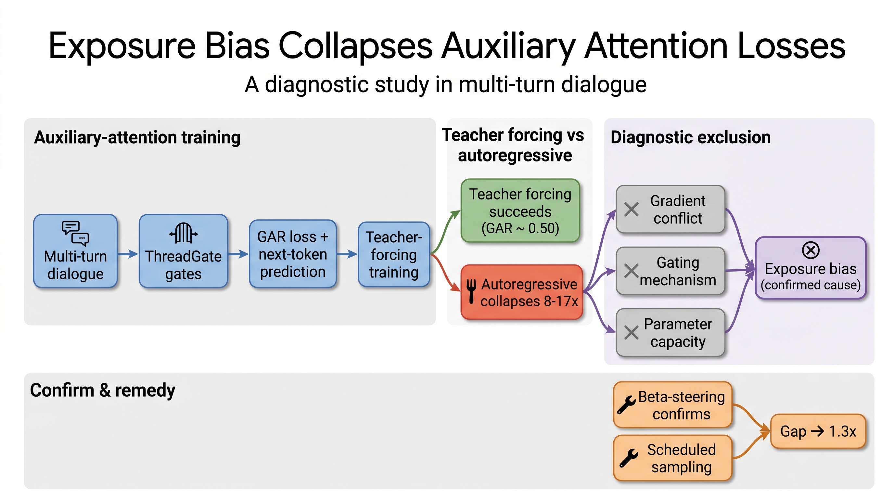
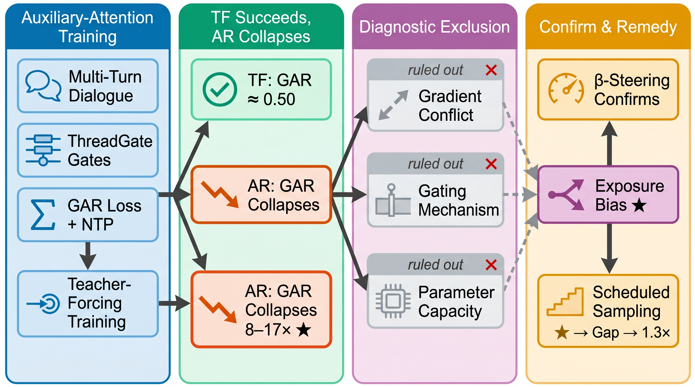
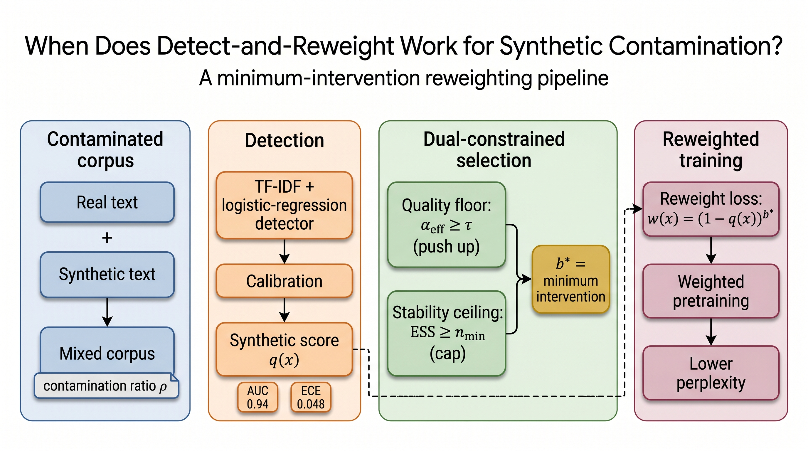
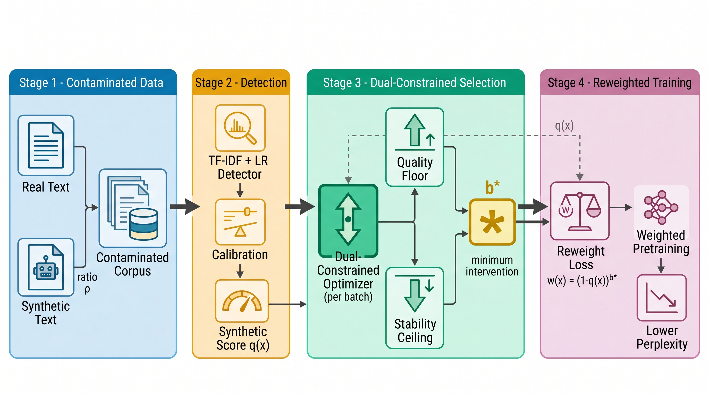
CCM 是我们自研的编码智能体编排平台。它让团队成员从"手动操作一个 AI 助手"，升级为"同时指挥多个自主智能体并行干活"——人只下达目标，一群 Claude Code 自动认领、编码、测试、合并、复盘，把每个人的有效产能成倍放大。
编码智能体这一年能力突飞猛进，但团队里大多数人还停留在"开一个窗口、问一句、等一句"的用法。真正的瓶颈，已经从"模型够不够强"，变成了"一个人到底能同时驱动多少个智能体"。CCM 就是为补上这块短板而生的内部工具。
每个任务，智能体都独立完成从"认领"到"复盘"的完整闭环。人只在两端出现——开头定义要做什么，结尾验收做得好不好，中间的全部工程流程不需要盯。
人只负责"定义要做什么"和"验收做得好不好"，9 步工程流程由智能体自己跑完。
每个任务在物理隔离的独立工作区里操作，并行也不会互相污染——这是"敢让它自主合并主干"的前提。
每次踩的坑与解法都写进知识库，新任务自动受益，团队经验越攒越厚。
以下全部来自 CCM 三台独立生产部署的真实运行记录——在最长约 4 个月的实际使用中（最早自 2026-02-27），平台已经实打实地交付了这些工作量。
三台部署"同时运行的智能体数量"逐周峰值之和——从每周 1～4 个，爬升到全部署同时 25 个并行。
| 部署 | 完成任务 | 推进项目 | 工作实例 | 单机并行峰值 |
|---|---|---|---|---|
| 部署 A | 46 | 22 | 13 | 9 |
| 部署 B | 621 | 54 | 17 | 10 |
| 部署 C | 709 | 44 | 32 | 14 |
统计区间 2026-02-27 至 2026-06-23；部署名称已匿名化。
CCM 的能力边界还在快速扩张。三件正在发生的事，决定了它能走多远——一个已成规模、一个初见雏形、一个蓄势待发。
CCM 从不局限于一台机器。它能按需在云端自动拉起一批 Worker 工作机，组成可弹性伸缩的执行集群——任务在 Manager 与 Worker 之间自动分发、迁移、回收，单机算力上限不再是天花板。
本次数据中的 62 个工作实例、25 路同时并行，正是这套弹性系统撑起来的。
CCM 已具备搭建自定义 Harness（智能体运行框架）的能力，目前已有初步实现。这让平台不被单一形态绑定，未来可承载更多类型的智能体与运行模式。
从"编排现成智能体"，走向"定义智能体如何运行"。
下一站是团队版本 Team CCM：把"一个人指挥一支智能体团队"，升级为"一个团队共享一支更大的智能体舰队"——多人协作、统一调度、共享技能与算力池。
个人提效 → 团队提效，量级再上一层。
多智能体并行 · 全流程自主交付 · 弹性 Worker 集群 · 可搭建 Harness · 三台生产部署实测
运行数据来自三台 CCM 生产部署数据库实时统计（2026-02-27 至 2026-06-23），部署名称已匿名化。